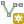
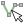
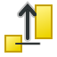

重要
翻訳は あなたが参加できる コミュニティの取り組みです。このページは現在 100.00% 翻訳されています。
7.3. 標高断面図ビュー
標高断面図 パネルは側面図を作成するためのツールで、線に沿った標高を可視化することができます。このツールはベクタ、ラスタ、メッシュ、点群レイヤをサポートします。データは2次元または3次元の形式です。
標高断面図ビューを追加するには、  メニューにアクセスします。必要に応じていくつでも標高断面図ビューを追加でき、ビューはドッキング可能で、互いに積み重ねることも、フローティングにすることもできます。
メニューにアクセスします。必要に応じていくつでも標高断面図ビューを追加でき、ビューはドッキング可能で、互いに積み重ねることも、フローティングにすることもできます。

図 7.32 メインマップキャンバスの下部に埋め込まれた標高断面図ダイアログ
図は海岸線と海岸堤防の背後にある町を示しています。標高断面図の線に適用する許容誤差を大きくすると、より多くの点群地物が返されます。
7.3.1. インターフェイス
標高断面図 パネルの上部には、以下のツールを有するツールバーがあります:
ツール |
ショートカット |
説明 |
|---|---|---|
|
Ctrl キーを押しながらドラッグ＆ドロップ |
プロットに新しいレイヤを追加します。 |
|
標高断面図ビューにおけるレンダリングを設定するためのプロジェクトレイヤのリストの表示・非表示を切り替えます。 |
|
 曲線キャプチャ |
プロファイル曲線を表す線をマップキャンバス上でインタラクティブに描画します。 |
|
 地物から曲線をキャプチャ |
マップキャンバス上の既存のライン地物を選択し、そのラインに沿ってプロファイル曲線を生成します。 |
|
|
Ctrl+Alt+, |
地図上のキャプチャ曲線を少しずつ左に動かします（例：最適な標高プロファイル曲線を見つけるため）。 |
|
Ctrl+Alt+. |
地図上のキャプチャ曲線を少しずつ右に動かします（例：最適な標高プロファイル曲線を見つけるため）。 |
|
プロファイル曲線と 標高断面図 ビューに表示されたプロットをすべて削除します。 |
|
|
シングルクリックで、または長方形をクリック＆ドラッグで、プロットキャンバス内の地物情報を表示します。結果は標準の 地物情報結果 ドックに表示されます。 |
|
|
Space |
クリック＆ドラッグでプロットキャンバスを移動させます。中央マウスボタンでも操作できます。 |
|
縦方向の縮尺はそのまま、横軸に沿って拡大します。 |
|
|
Ctrl+Space |
プロット上をクリックで、または長方形をクリック＆ドラッグで、プロットを拡大します。 Alt キーを押しながらクリックすると、反対に縮小します。 |
|
標高断面図 ビューをキャプチャ曲線の範囲に合わせて拡大縮小します。 |
|
|
標高断面図ビュー内にプロットされた地物の辺や頂点にスナップします。座標の正確な取得や距離の測定に便利です。 |
|
|
水平距離と垂直距離を計測します。 |
|
|
プロットをPDFへ（高品質なベクタオブジェクトとして）エクスポートします。 |
|
|
プロットをいくつかの画像形式でエクスポートします。 |
|
|
プロットを3D地物、2Dプロファイル、距離/標高テーブルとして出力します。(結果はDXFファイル、CSVファイル、または標準の書き込み可能なベクタ空間フォーマットのいずれかで保存できます)。詳細は 標高断面図から出力する をご覧ください。 |
|
|
標高断面図曲線の設定にアクセスします。 |
|
|
水平方向と垂直方向のスケールを常に等しく保つようにします（例えば、45° の斜面はプロファイルビューでも 45° の斜面として表示されます）。 |
|
標高断面図内の距離をマップキャンバスの距離単位以外の単位でレンダリングします。 |
||
地物（ベクタ点、線、ポリゴン、点群）が、実際のプロファイルラインからどれだけ離れていても結果に含まれるかを設定します。マップ単位を使用し、他のレイヤーやジオメトリタイプでは無視されます。 |
||
プロファイルビューの名前を変更できます。 |
||
|
ビューのドック状態とフロート状態を切り替えます。 |


{kind=link}
{kind=link}
 レイヤツリーを表示 ボタンを押すと、左下に レイヤ パネルのコピーが表示されます。ただし、これは独立したウィジェットで、表示レイヤの組み合わせや重ね合わせ順序は独自に持っています。このウィジェットで、レイヤのレンダリングやプロットキャンバス内での動作を制御できます:
レイヤツリーを表示 ボタンを押すと、左下に レイヤ パネルのコピーが表示されます。ただし、これは独立したウィジェットで、表示レイヤの組み合わせや重ね合わせ順序は独自に持っています。このウィジェットで、レイヤのレンダリングやプロットキャンバス内での動作を制御できます:
レイヤ名の左にあるボックスをクリックすると、プロットキャンバスにレンダリングするかどうかを設定できます
レイヤを上下にドラッグ＆ドロップして、レイヤの順序を変更できます
標高断面図ビューでのレイヤのレンダリングスタイルを設定できます：レイヤをダブルクリックするか、右クリックして プロパティ... を選択すると、設定のためにレイヤの 標高 プロパティタブが開きます。レイヤ上にカーソルを乗せると、標高の設定に関する概要がツールチップとして表示されます。
レイヤツリーの右にあるプロットキャンバスは、有効になっているレイヤの標高断面図をプレビューできるメインの場所です。キャンバスのベースは目盛り付きのグリッドで、横軸はプロファイル曲線の長さ、縦軸は測定した地物のZ標高を表します。また、上にあるツールを使用してズーム、パン、距離計測や地物情報表示などの操作ができます。
7.3.2. 標高断面図の作成
標高断面図ビューを作成するには、以下のように操作します:
 メニューを選択します。 標高断面図 パネルが開きます。
メニューを選択します。 標高断面図 パネルが開きます。プロファイル曲線を作成します。この線に沿った地形や地物がレンダリングされます。描画ツールを以下から選択します:
曲線キャプチャ: メインマップキャンバスを左クリックして頂点を追加し、右クリックで描画を終了することで作成した線をプロファイル線として使用します
または、 地物から曲線をキャプチャ: マップキャンバス上のライン地物をクリックし、プロファイル線として選択します。クリックした点に複数の地物がある場合には、ポップアップメニューが現れ、その中から地物を選択できます。
ラインのデジタイズに関するあらゆる機能、例えば スナップオプション や、 トレース 、 デジタイズのテクニック 、 高度なデジタイズパネル などを利用することができます。
ここで、プロットキャンバスはいくつかの地物をレンダリングするかもしれません。
次のステップは、可視化したいレイヤの標高プロパティの設定です。
- レイヤツリーを表示 ボタンを押して、レイヤのリストを表示させます。デフォルトでは、プロファイルツールに読み込まれ参照されるのは、プロジェクトのレイヤすべてではありません。例えば、プロパティに標高データがあるとマークされていないラスタレイヤは無視されます。
 レイヤを追加 ボタンをクリックすると、現在のプロットには無くプロットに追加可能な、フィルタリングされたレイヤのリストが表示されます。ダイアログでレイヤ群を選択してOKボタンを押すと、標高データを持つものとして自動的にマークされ、プロットに即座に追加されます。
レイヤを追加 ボタンをクリックすると、現在のプロットには無くプロットに追加可能な、フィルタリングされたレイヤのリストが表示されます。ダイアログでレイヤ群を選択してOKボタンを押すと、標高データを持つものとして自動的にマークされ、プロットに即座に追加されます。Tip
メインレイヤツリーから標高断面図ツールのレイヤツリーにレイヤをドラッグし、 Ctrl キーを押しながらドロップすることで、レイヤを追加できます。
興味のあるレイヤの表示/非表示を切り替えます。これらのレイヤは標高断面図ビューにレンダリングされるだけで、選択するレイヤはメインの レイヤ パネルとは異なったものにできます。
レイヤ名をダブルクリックするか、右クリックして プロパティ を選択します。レイヤの 標高 プロパティタブが開きます。ここで各地物または地形が標高断面図ビューでどのようにレンダリングされるかを設定します。使用できるプロパティはレイヤの種類によって異なります：
標高プロパティが設定されると、標高断面図ビューは設定したプロファイル曲線と交差するアクティブなレイヤの地形または地物のレンダリングを開始します。
 オプション ドロップダウンメニューで、 許容範囲 の値を設定できます。この値は、メインのマップキャンバスに表示される標高断面図ラインの周囲に平坦なバッファを作成するために使用されます。このバッファと重なる可視の地物（点、線、ポリゴンなど）は、プロットキャンバスに取り込まれます。
オプション ドロップダウンメニューで、 許容範囲 の値を設定できます。この値は、メインのマップキャンバスに表示される標高断面図ラインの周囲に平坦なバッファを作成するために使用されます。このバッファと重なる可視の地物（点、線、ポリゴンなど）は、プロットキャンバスに取り込まれます。
注釈
ポリゴン押し出しの制限
レイヤーの  標高 プロパティでジオメトリの押し出しを設定し、プロファイルビューでレンダリングできます。ただし、許容範囲を有効にした場合、押し出されたポリゴンをレンダリングするのは簡単ではないため、現在のところポリゴンの押し出しは無視されます。
{kind=link}
7.3.3. 標高断面図ビューの操作
標高断面図のラインを作成すると、プロットキャンバスはその全範囲にズームします。X軸はプロファイルの長さ、Y軸はキャプチャした標高の最大値・最小値の範囲となります。どちらの軸も地図単位です。
標高断面図ビュー内でマウスポインターを動かすと、2つの交差する点線が表示されます:
横線は高さの情報
縦線は標高断面図ラインの始点からの距離
標高断面図ビュー内でマウスポインターを動かすと、メインマップキャンバスで標高断面図のラインに沿って移動する黒い点があることも確認できます。ラインの中間には、方向を表示する矢印があります。
メインマップキャンバスと同様に、QGISはプロットキャンバス上をナビゲートする手段を提供します:
 パン は、標高断面図の範囲を好きな方向に移動させるのに使います。 Space キーを押しながらマウスを移動させることでも、プロットキャンバスの範囲を平行移動できます。
パン は、標高断面図の範囲を好きな方向に移動させるのに使います。 Space キーを押しながらマウスを移動させることでも、プロットキャンバスの範囲を平行移動できます。 X軸ズーム は、縦軸（標高）の縮尺を保ったまま、横軸に沿って拡大するのに使います。左クリックすると、クリックした点をX軸の中心として軸に沿って引き伸ばします。また、長方形をドラッグすると、X軸に沿って長方形の幅にプロットを引き伸ばします。 Alt キーを押しながら X軸ズーム を使用すると、X軸方向に縮小します。
X軸ズーム は、縦軸（標高）の縮尺を保ったまま、横軸に沿って拡大するのに使います。左クリックすると、クリックした点をX軸の中心として軸に沿って引き伸ばします。また、長方形をドラッグすると、X軸に沿って長方形の幅にプロットを引き伸ばします。 Alt キーを押しながら X軸ズーム を使用すると、X軸方向に縮小します。 ズーム は、（左クリックで）ある一点に拡大する、または（範囲を長方形ドラッグで）ある範囲に拡大するのにつかいます。 Alt キーを押しながら ズーム を使用すると、反対に縮小します。 Ctrl キーと組み合わせると、より滑らかに拡大・縮小することができます。
ズーム は、（左クリックで）ある一点に拡大する、または（範囲を長方形ドラッグで）ある範囲に拡大するのにつかいます。 Alt キーを押しながら ズーム を使用すると、反対に縮小します。 Ctrl キーと組み合わせると、より滑らかに拡大・縮小することができます。 全域表示 は最初に使用したデフォルトのズームレベルで、表示する地物すべてに関する標高断面図のラインの全範囲を表示します。ズームレベルのリセットに使用します。
全域表示 は最初に使用したデフォルトのズームレベルで、表示する地物すべてに関する標高断面図のラインの全範囲を表示します。ズームレベルのリセットに使用します。
プロットキャンバスに表示された要素とのインタラクションもあります:
 スナップを有効化 ボタンを押すと、ポイントや地物の頂点やエッジを正確にとらえることで、正確な距離計測や座標取得ができます。
スナップを有効化 ボタンを押すと、ポイントや地物の頂点やエッジを正確にとらえることで、正確な距離計測や座標取得ができます。 地物情報を表示 は、レイヤツリーで表示されているレイヤの地物の識別に使用します。標高断面図ビュー内でいくつかの地物にまたがって長方形をドラッグすると、それらの地物をクエリできます。対応した形式（例：ベクタレイヤや点群など）ならば、その地物がメインマップキャンバスで強調表示されます。
地物情報を表示 は、レイヤツリーで表示されているレイヤの地物の識別に使用します。標高断面図ビュー内でいくつかの地物にまたがって長方形をドラッグすると、それらの地物をクエリできます。対応した形式（例：ベクタレイヤや点群など）ならば、その地物がメインマップキャンバスで強調表示されます。 距離を計測: プロットキャンバス内で2点をクリックまたは選択すると、2点間の水平 距離 、 標高 差、および 合計長 を地図単位で表示します。
距離を計測: プロットキャンバス内で2点をクリックまたは選択すると、2点間の水平 距離 、 標高 差、および 合計長 を地図単位で表示します。 やや左 と
やや左 と  やや右 は、マップキャンバス内の標高断面図のラインの位置を左右に移動させるのに使います。プロットキャンバスは再描画され、標高断面図のラインバッファと重なる地物や地形が表示されます。ラインの左右への移動量には、 オプション メニューの 許容範囲 の値を使用します。
やや右 は、マップキャンバス内の標高断面図のラインの位置を左右に移動させるのに使います。プロットキャンバスは再描画され、標高断面図のラインバッファと重なる地物や地形が表示されます。ラインの左右への移動量には、 オプション メニューの 許容範囲 の値を使用します。
警告
現時点では、標高断面図ビューやプロジェクトを閉じると、ビューがプロジェクトから削除されてしまいます。
更なる詳細については、Nyall Dawson氏によるプレゼンテーション QGIS elevation profile/cross section tool -- a deep dive! をご覧ください。
7.3.4. 標高断面図からの出力
標高断面図 ダイアログのトップツールバーには、標高断面図を出力するためのさまざまなツールがあり、他のソフトウェアでプロットを再利用できます。
 PDF形式で出力: プロットをPDF（高品質のベクタオブジェクトとして）に出力します。出力ファイルの生成には、以下のオプションが求められます。
PDF形式で出力: プロットをPDF（高品質のベクタオブジェクトとして）に出力します。出力ファイルの生成には、以下のオプションが求められます。ページサイズ では、定義済みのリストからページを選択するか、カスタムの寸法とページの向きを設定できます。
チャート範囲 は、出力するチャートの範囲を制御するためのものです。
X軸では、プロファイル曲線の開始点からの 最小距離 と 最大距離 を設定します。
Y軸では、 最小標高 と 最大標高 を設定します。
距離軸の設定 は、標高断面図が描画されるグリッドの水平方向の目盛りを設定するのに役立ちます。 ラベル間隔 、 主グリッド線間隔 、 副グリッド線間隔 をカスタマイズできます。
標高軸の設定 は、上記と同様に、垂直方向の目盛りを設定します。
 画像として出力: プロットを画像ファイル形式で出力します。以前に言及された チャート範囲 、 距離軸の設定 、 標高軸の設定 に加え、 画像幅 や 画像高さ などの具体的な 出力オプション が求められます。
画像として出力: プロットを画像ファイル形式で出力します。以前に言及された チャート範囲 、 距離軸の設定 、 標高軸の設定 に加え、 画像幅 や 画像高さ などの具体的な 出力オプション が求められます。 結果を出力: プロファイルの解析結果を、ベクタレイヤーの地物セットとして出力します（
結果を出力: プロファイルの解析結果を、ベクタレイヤーの地物セットとして出力します（.DXF、.CSV、.SHP、.GPKGなど）。出力フォーマットによっては、出力される地物のジオメトリタイプが異なる場合に複数のレイヤーが返されることがあります。: 標高断面図のラインを3D地物として出力します。標高値は標高スライスから取得され、出力されたジオメトリのZ値に格納されます。
: プロファイルを2Dプロファイルラインとして出力します。標高は出力されたジオメトリのY次元に、距離はX次元に（標高断面図ウィジェットに表示されている通りに）格納されます。
: プロファイルを、サンプリングされた距離と標高値のテーブルとして出力します。